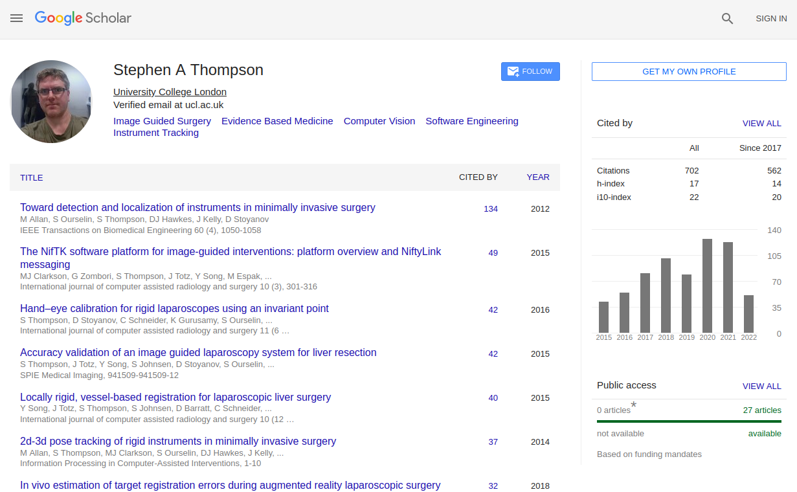

<a href="https://scholar.google.co.uk/citations?user=-rD4cJIAAAAJ">

<a width="30%" height="70%" class="twitter-timeline" href="https://twitter.com/scikit_surgery?ref_src=twsrc%5Etfw">Tweets by scikit_surgery</a> <script async src="https://platform.twitter.com/widgets.js" charset="utf-8"></script> 

<div>
  <iframe id="vid1" width="20%" src="https://www.youtube.com/embed/0z8eIjqAbzQ" title="YouTube video player" frameborder="0" allow="accelerometer; autoplay; clipboard-write; encrypted-media; gyroscope; picture-in-picture" allowfullscreen style="vertical-align:top"></iframe>


  <iframe id="vid2" width="20%" src="https://www.youtube.com/embed/mP2sKfYIR4o" title="YouTube video player" frameborder="0" allow="accelerometer; autoplay; clipboard-write; encrypted-media; gyroscope; picture-in-picture" allowfullscreen></iframe>


  <iframe id="vid3" width="20%" src="https://www.youtube.com/embed/frviS--x5y4" title="YouTube video player" frameborder="0" allow="accelerometer; autoplay; clipboard-write; encrypted-media; gyroscope; picture-in-picture" allowfullscreen></iframe>


  <iframe id="vid4" width="20%" src="https://www.youtube.com/embed/jWVsO4nkcZI" title="YouTube video player" frameborder="0" allow="accelerometer; autoplay; clipboard-write; encrypted-media; gyroscope; picture-in-picture" allowfullscreen></iframe>
</div>
